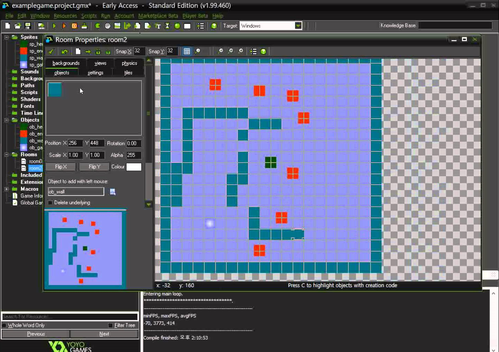
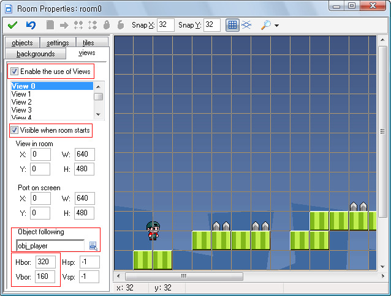

네덜란드의 교수인 마르크 오버르마르스(Mark Overmars)가 강의를 목적으로 만든 Animo라는 그래픽 툴을 기반으로 1999년 첫 사용버전인 1.1을 출시하였다.
이후, 8.1버전까지 넘버링이 이어져왔고, 2012년 멀티플랫폼으로 퍼블리싱이 가능한 툴인 게임메이커: 스튜디오 1.0을 발매했다.
그래픽 에디터, 맵 에디터, 자체 스크립트 언어 등이 내장되어 이 프로그램 단독으로도 게임을 만드는데 큰 무리는 없다.
플래시와 추구하는 바가 비슷하지만, 게임메이커는 게임 제작에 특화되어 있다는 게 차이점이다.

현재 최신 버전은 게임메이커 스튜디오 2이며,아직은 윈도우 전용이지만 macOS의 경우 Beta 버전으로 출시된 상황이다
GMS2가 나옴에 따라 GMS1은 스팀에서 3월 9일자로 판매중지되었으며 이미 GMS1을 보유하고 있을 경우 일반 버전을 40% 세일가로 구매할 수 있다.
기존의 게임메이커: 스튜디오의 버전은 1.4.1804이고 개발툴 자체는 윈도우 전용이지만 콘솔부터 모바일, 데스크탑까지 다양한 플랫폼으로 익스포트 가능한 모듈을 구매할 수 있다.
